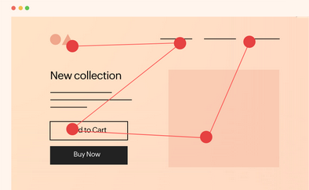
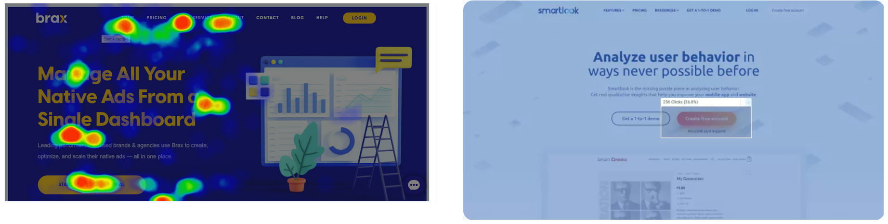
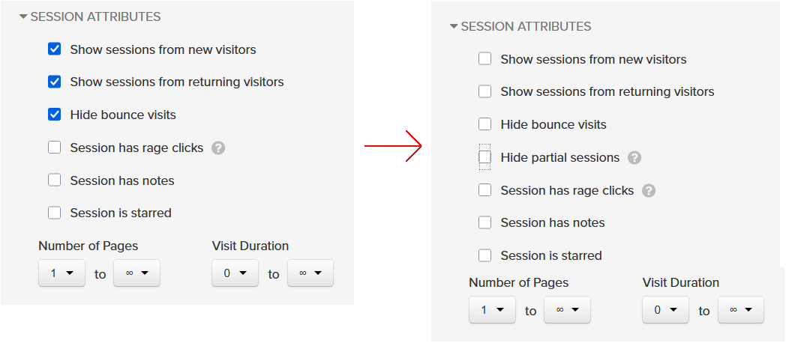

Learning Goals
At the end of this Tutorial, you will be able to:
- Create a free Inspectlet account to track user behaviour on your website
- Install the Inspectlet tracking code correctly on your web pages
- Access and interpret session recordings of real user interactions
- Generate and analyse heatmaps to understand user click patterns
- Track form usage to identify fields where users struggle
- Make data-driven decisions to improve your website's user experience
Introduction
A number of tools are available to help you understand how visitors interact with the pages of a website. Here are a few examples:
These tools provide visual insights into user behaviour through:
- Session recordings: Videos of actual user sessions on a web page showing user actions - every mouse movement, scroll, click, and keypress. 
- Heatmaps: Aggregrations of user sessions to create a visual representation of where users click, move their mouse, and how far they scroll down a web page. 
- Form analytics: Data on how users interact with forms, where they hesitate, and which fields cause problems. This helps you gauge how effective a form is at converting inbound visitors into customers.
This Tutorial will focus on Inspectlet, a powerful tool that provides session recordings, heatmaps, and form analytics.
Creating a free account on Inspectlet
Follow these steps to create your free Inspectlet account:
- Visit the Inspectlet website and click on the Pricing option on the navbar menu.

- On the Pricing screen, under the Free column, click the Sign Up button.
- Complete the registration form. Your website address will be in the format below: username.github.io
Installing the tracking code
Once you have registered, you are shown a screen similar to that below.

- Copy the Inspectlet tracking code.
- In VS Code, open your website home page index.html and paste in the tracking code just before the closing </head> tag.
- Paste this code into as many pages of your website as you want to track.

- When finished, upload your web page(s) to your account on GitHub.
To verify the installation:
- Visit your website and perform some interactions.
- Return to Inspectlet and click on the Done! Go to Dashboard button.
Working with Inspectlet Dashboard
The Inspectlet Dashboard provides an overview of your website's performance and user interactions. This is the first screen shown after you log in as a registered user.

Working with session recordings
Session recordings are the heart of Inspectlet. They allow you to watch real users interact with your website, providing insights into their behaviour and experience.
To access and use session recordings:
- At the left of the Dashboard, click the Session Recordings option.
- At the right of this screen are a number of filtering options that are selected by default. Deselect these options as shown below. 
- At the left of the screen you should see a number of sessions.
Click on a recording on the sessions screen to watch the visitor's:
- Mouse movements (shown as a trail)
- Clicks (highlighted with circles)
- Scrolling behaviour
- Form interactions
- Page navigation
Ignore any sessions that begin with c:\
When analysing session recordings, look for:
- Confusion points: Where users hesitate or move their mouse erratically
- Failed interactions: Attempts to click on non-clickable elements
- Form struggles: Fields that users spend a lot of time on or repeatedly edit
- Navigation patterns: How users move between pages
- Reading patterns: How users consume your content
Session recordings provide qualitative insights that numbers alone can't reveal, helping you understand the "why" behind user behaviour.
Working with heatmaps
Heatmaps provide aggregated visual data of user behaviour across many sessions. They show where users focus their attention and interact with your pages.
To access and analyse heatmaps:
- Go to the Heatmaps section in your Inspectlet dashboard.
- Select the page you want to analyse.
- Choose between different heatmap types:
- Click heatmaps: Show where users click on your page
- Scroll heatmaps: Show how far down users scroll on your page
- Mouse movement heatmaps: Show where users move their cursor
When interpreting heatmaps, look for:
- Hot spots: Areas with a high concentration of clicks or mouse activity
- Dead zones: Areas with little to no interaction
- The scroll line: The point where most users stop scrolling
- Non-link clicks: Areas users try to click that aren't actually clickable
- Ignored CTAs: Call-to-action buttons that aren't getting attention
Use these insights to:
- Reposition important content above the scroll line
- Turn frequently-clicked non-links into actual links
- Redesign or move ignored call-to-action buttons
- Remove or redesign elements in dead zones
Form Analytics
For websites with forms, Inspectlet's form analytics provide valuable insights into how users interact with your forms:
To access and use form analytics:
- Navigate to the Form Analytics section in your Inspectlet dashboard.
- Select the form you want to analyse.
- Review metrics like:
- Form completion rate: Percentage of users who complete the form
- Time spent on each field: How long users spend filling out each field
- Field abandonment rate: Fields where users give up
- Error rates: Fields that frequently trigger validation errors
Use form analytics to:
- Identify and fix problematic form fields
- Simplify or remove fields that cause high abandonment
- Improve field labels and instructions for confusing fields
- Add better error messages for fields with high error rates
- Determine the optimal form length for your audience
Even small improvements to your forms can significantly increase conversion rates and lead quality.
Best practices
Follow these best practices to get the most value from Inspectlet while respecting user privacy:
- Update your privacy policy to disclose that you use session recording technology. Use ChatGPT or other AI to help you draft your new policy that includes both Google Analytics and Inspectlet. Failure to do so is a breach of Irish and EU privacy laws.
- Use Inspectlet alongside tools like Google Analytics to create a systematic process for reviewing and acting on insights
- Prioritise changes that will have the biggest impact on user experience